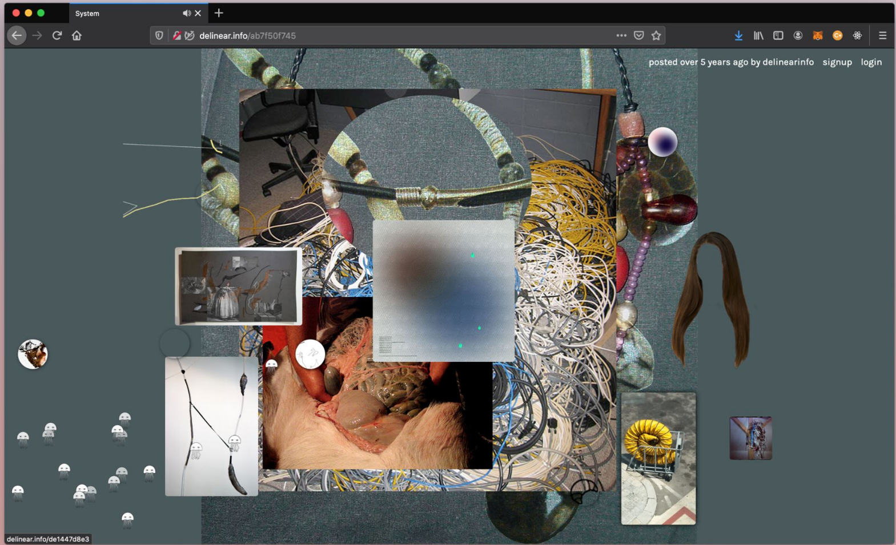

Artworks
Deli Near .Info, Software, 2014
Deli Near. Info (2014) is an intuitive piece to explore the dominance of checking, selecting, and censoring structures and algorithms on the internet. By creating a fully functioning digital social network called Deli Near. Info, van den Dorpel aimed to intervene in these structures. The work challenged the linear structures that are prevalent in mainstream social media feeds. Instead, users could link various elements like images, websites, texts, and videos in a non-hierarchical structure on a separate page, resulting in a collection of associative collages. While these collages were partly created by individuals, they were mostly the result of collective effort. The overall network formed the artwork, with users' content carrying distinct signatures. (https://www.li-ma.nl/article/cultural-matter-harm-van-den-dorpel/)
"At the time I was thinking a lot about the discrepancy between traditional art making which values the production of immutable, monumental objects, and the development of software and online publishing, which always remain somewhat fluid, and never fully reach completion, or conclusion. Whiteboards aid the collaborative process of software teams, by visualizing methodologies like 'scrum' or 'kanban'. They can always be erased, and their drawings are often complemented with magnets that stick to the surface, but never permanently. These whiteboards can always be reconfigured, and information could be added, or removed at will, which complicated their functioning as art objects."
In "Networked Co-Curation: An Exploration of the Socio-Technical Specificities of Online Curation,“ Dekker and Tedone state that "[Deli Near.Info] provides an exemplary case of how the human and machinic relation is embedded within the technical layers of online databases.”

Exhibitions
The software and its creations have been featured in “Just In Time,” at American Medium in NYC, January 2015 and “Living Media Art,” Amsterdam, March 2018.
